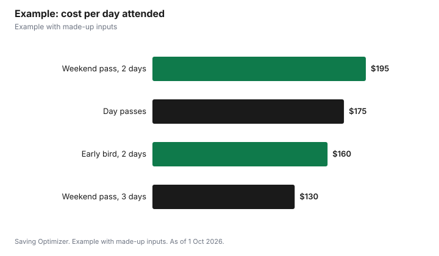

Entertainment · Canada
Music Festival Passes in Canada: Early Bird, Tiers, Day Passes and the Real Total
Buy an early bird festival pass only if you are confident you will go, because the cheapest tier usually sells before the full lineup is out and is often non-refundable. Then compare options by all-in cost per day you will actually attend: the pass with fees and tax, plus travel, lodging or camping and food. A weekend pass is cheaper per day only if you attend every day. In Ontario, sellers must show the total price with fees and taxes up front, and resale tickets cannot be sold above the original total price plus taxes and the platform's fees, which limits how much a missed tier can cost you on resale.
Key takeaways
- Tiered pricing rises as each tier sells out; early bird is cheapest and least flexible.
- Compare all-in cost per day attended, not the headline pass price.
- A weekend pass beats day passes only if you go every day.
- Ontario requires total prices with itemized fees and taxes in Canadian dollars.
- Ontario resale is capped at the original total price plus taxes and platform fees.
- Example with made-up inputs: a $390 weekend pass is $130 a day for three days, but $195 for two.
How festival pricing works
Many festivals sell passes in tiers: an early bird or presale tier, then numbered tiers that rise in price as each one sells out, then the final general admission price. VIP or premium passes add amenities such as separate viewing areas, washrooms or bars. Some festivals offer payment plans that spread the cost over several instalments, sometimes with a fee. The festival's own ticket page and terms are the only reliable source for prices, refunds and transfer rules; read them before you buy.
| Pass | Pros | Watch for |
|---|---|---|
| Early bird or presale | Lowest price | Lineup may be incomplete; often non-refundable |
| Later tiers | Lineup known | Higher price; tiers can sell out quickly |
| Day pass | Pay only for the day you want | Higher per day; best acts may be split across days |
| Weekend pass | Lowest per day if you attend all days | Wasted if you skip a day |
| VIP or premium | Comfort, shorter lines | Large premium; check what is really included |
| Payment plan | Spreads the cost | Plan fees; missed payments; refund terms |
Before buying, also check whether the pass can be transferred to a friend, whether it is a wristband mailed ahead or picked up on site, and whether re-entry is allowed. Those details decide what happens if your plans change, and whether you can leave for a cheaper meal and come back.
Ontario's rules on total prices and resale
Ontario's government says that when tickets are on sale, primary sellers must disclose the total price of the ticket in Canadian dollars, including an itemized list of applicable fees, service charges and taxes, and the seat location or standing area if applicable. Before sales, they must disclose how tickets will be distributed, including any presales, and the event's maximum capacity. After you buy, the ticket must print or display the total price paid, including tickets sold in packages.
On resale, Ontario says it is illegal to resell tickets, or help resell them, for more than the original total price, so a resale buyer never pays more than that plus applicable taxes and the resale platform's standard fees. Resale listings must show the original total price and an itemized list of fees and taxes. If you buy a resale ticket, you must receive a written money-back guarantee, for example if the ticket does not admit you or the event is cancelled before it can be used. These rules apply to tickets for events in Ontario, regardless of where the seller is based.
| Rule | What it means for you |
|---|---|
| Total price disclosed with itemized fees and taxes | Compare passes on the real price |
| Presale and capacity information disclosed | You can see how tickets are being released |
| Ticket shows total price paid | Proof of the original price if you resell |
| Resale capped at original total price plus taxes and platform fees | Missing a tier will not cost a huge markup on legitimate resale |
| Written money-back guarantee on resale | Protection if the pass does not work or the event is cancelled |
Outside Ontario, rules differ by province. For scams and resale safety generally, see avoiding resale ticket scams, and for fees, ticket fees and all-in pricing.
The real total: a worksheet
| Line | Notes | Amount |
|---|---|---|
| Pass, all-in | Price plus fees and tax | |
| Travel | Transit, gas and parking, or flights | |
| Lodging or camping | Nights, shared with friends | |
| Food and drinks | Per day on site and off | |
| Merch and extras | Set a cap | |
| Total | ||
| Days you will attend | Be honest | |
| Cost per day | Total ÷ days |
Example with made-up inputs: weekend or day passes
These numbers are an example with made-up inputs. They are not any festival's prices. A three-day weekend pass costs $390 all-in, and a day pass $175 all-in. If you attend all three days, the weekend pass costs $130 a day against $175, a clear win. If you only go two days, the weekend pass costs $195 a day against $175 for day passes, so two day passes at $350 are cheaper than the $390 weekend pass. An early bird weekend pass at $320 changes the math: even for two days it is $160 a day, but only if you are sure you will go, since it is non-refundable in this example.
| Option | Total | Days attended | Per day |
|---|---|---|---|
| Weekend pass | $390 | 3 | $130 |
| Weekend pass | $390 | 2 | $195 |
| Two day passes | $350 | 2 | $175 |
| Early bird weekend pass | $320 | 2 | $160 |

Cutting the extras
For many people the pass is less than half the trip. Share lodging with friends, camp if the festival offers it and you have gear, eat a large meal before you go in, and bring what the festival allows, such as an empty refillable water bottle. Take transit if it runs to the site; parking can add a lot over a weekend. Set a merch cap before you arrive.
Steps
- Decide how many days you will really attend.
- Read the festival's ticket terms: refunds, transfers, payment plans and what is included.
- Compare early bird, later tiers and day passes on cost per day attended.
- Fill in the worksheet with travel, lodging and food.
- Buy from the official seller, and in Ontario check the itemized total price.
- If plans change, resell only through legitimate channels within the rules.
For other events, see concert travel budgets for Toronto and Vancouver shows.
Sources
- Government of Ontario, Buying tickets to events in Ontario, ontario.ca (updated 4 Jun 2026), as of 1 Oct 2026. Total price disclosure, presale and capacity disclosure, resale cap, money-back guarantee, scope.
- Pass prices and days in the example are an example with made-up inputs.
Frequently asked questions
Is an early bird festival pass worth it?
If you are sure you will go. It is usually the cheapest tier but sells before the full lineup is known and is often non-refundable. Check the festival's terms.
Should I buy a weekend pass or day passes?
Compare cost per day attended. A weekend pass is cheaper per day only if you go every day; if you skip a day, day passes may cost less.
Do Ontario ticket prices have to include fees?
Ontario requires primary sellers to disclose the total price in Canadian dollars, with an itemized list of fees, service charges and taxes.
Can festival passes be resold for more in Ontario?
No. Ontario says tickets cannot be resold for more than the original total price; buyers pay at most that plus applicable taxes and the platform's standard fees.
What protection do I get buying a resale pass in Ontario?
A written money-back guarantee from the secondary seller or platform, for example if the ticket does not admit you or the event is cancelled before it can be used.
What costs besides the pass should I budget for?
Travel, lodging or camping, food and drinks, and merch. For many people these add up to more than the pass.
Researched and drafted with AI assistance and fact-checked against official Canadian sources. How we create content.
Disclosure: Saving Optimizer may earn a commission if a partner link is added later, such as a ticketing offer type. No partnership is claimed on this page. Education only.